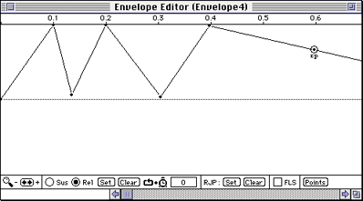

An envelope sets the shape of an audio parameter plotted over time. An
envelope typically controls one of an instrument's attributes such as its
amplitude, timbre, or frequency.
The ARIA tool lets you set sustain loops, release loops, release points,
and other attributes for the envelope simply by editing its graphic
representation.
The section below shows you how to add an envelope to a simple patch. A
tips and tricks section gives some advice from our developers.
Preparing a patch with an envelope
Preparing a patch with an envelope consists of two parts:
To add an envelope to an existing patch, follow these steps:
Select the envelope block in the Tool bar and drag an envelope block
in front of the item (waveform or sampler) you want to modify and after
the attribute you want to modify (see Figure 1 below for a complete patch
with an envelope).
Move the start point in the top-left corner further down as desired.
Note: The start point is initially invisible. Just grab the
top-left corner and you will find you can move the point.
Add more points by holding the Option button and clicking or dragging
the line.
To set a sustain loop, drag out a marquee by holding the Shift key and
select all points over which you want the loop, then click Set and type in
the loop- back time-if you don't provide one, you'll hear a click. Sustain
loops are indicated by bright red lines.
The same technique can be used for release loops. Just click the Rel
radio button instead of the Sus radio button.
Note: To delete a point, Option-click it.
To set a Release Jump Point, select a point and click on the Set box
in the RJP area. The letters "rp" next to the point indicate you have set
it. Note that the point will not go away when you clear the RJP, but the
letters disappear.
In most cases, you will also want to set the FLS bit.
When an envelope or sample finishes, if the FLS bit is set, then the
instrument is considered finished and it will be stopped. Once stopped,
the instrument is more eligible to be used by other voices. For example,
if you have three envelopes on one instrument: pitch, filter, and
amplitude, the sound is considered over only when the amplitude goes to
zero. You should therefore set the FLS bit in the amplitude envelope but
not in the others.

Figure 3: Example of a complex envelope.
Tips and tricks for working with envelopes
This section contains tips and tricks for working with samples. These tips
were provided by 3DO developers who worked with ARIA during its Beta
period.
Sustain and release loop points
The aiff file format supports two loops: sustain loops and release loops. The audio folio takes
advantage of this by interpreting the first set of loop points as the
sustain loops and the second set as the release loop. These loop points
can be set to be the same, cover separate data, or mark overlapping data
in the sound file.
Most audio applications support the first set of loop points but not
the second. You can, however, use SoundDesigner to edit the sound file and
set loops. SoundDesigner does not support sustain loops and release loops
explicitly, but if you use "loop 1" as the sustain loop and "loop 2" as
the release loop, things will work. The loop points show up in SoundHack
if you want to adjust them further.
Heuristics for using loop points
Remember that loop points have to be set on
even-numbered samples for the audio folio to play them back correctly.
When preparing loop samples, keep the
loops short and set both the sustain and release loops to the same point.
This results in a relatively small sample file. Remember that if a release
loop is set in the sample, you probably have to use an ARIA instrument
with an envelope that contains a release jump point to play back the
sample correctly.
Samples and dsp ticks
In some cases, the DSP may not have
enough ticks available to handle all the notes with envelopes it is asked
to play. To remedy this, the following trade-off can be made: First,
substitute sampler.dsp instruments (the default) for ARIA instruments
where feasible. Doing this means removing release loop points in the
affected aiff files-these are identical to the sustain loops-and then
adding release data to the sample after the sustain loop data occurs. The
release is generally a few iterations of the data found in the sustain
loop that are faded out quickly. This means that the compiled instruments'
data take up more memory (because of the extra release data) but save on
ticks due to the lack of an envelope generator in the instrument. Since
this solution requires more memory, it is not optimal, but it does cut
down the number of ticks used fairly well.
Building an envelope for a patch
There is currently no rate-scaling for envelopes built into the audio
folio or into ARIA. The shape and duration of an envelope therefore always
stays fixed, no matter how far a sample played into it gets transposed up
or down from its original pitch. This is not quite how instrumental sounds
behave in the real world.
There is not necessarily any correlation between the loop points set
in the aiff sample file and the sustain loop set in the envelope. They are
set independently and are not compared during compilation; it is up to you
to make sure that the two sets of points work together in a useful manner.
In an envelope, the Release Jump Point is jumped to when a Note-Off
command is received, but in an aiff file with a sustain loop, the data in
the loop is played to the end when a Note-Off is received before going on
to play any data beyond the loop. Therefore, in playing an instrument that
contains both an envelope with a sustain loop and an aiff file with loop
points set in it (particularly if the loop is long), it is possible that
an envelope could close down a note before any release data is played or
even before the current iteration of the data in the sustain loops
finishes playing.